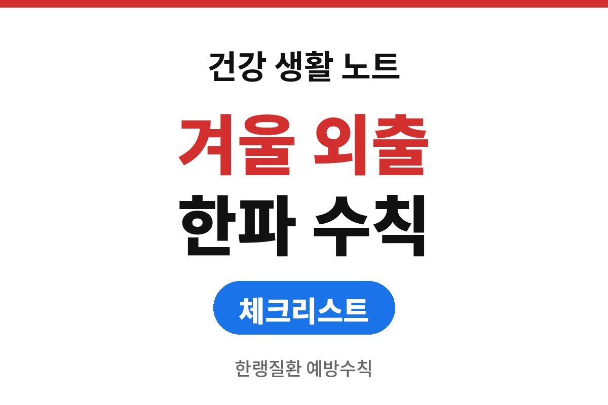
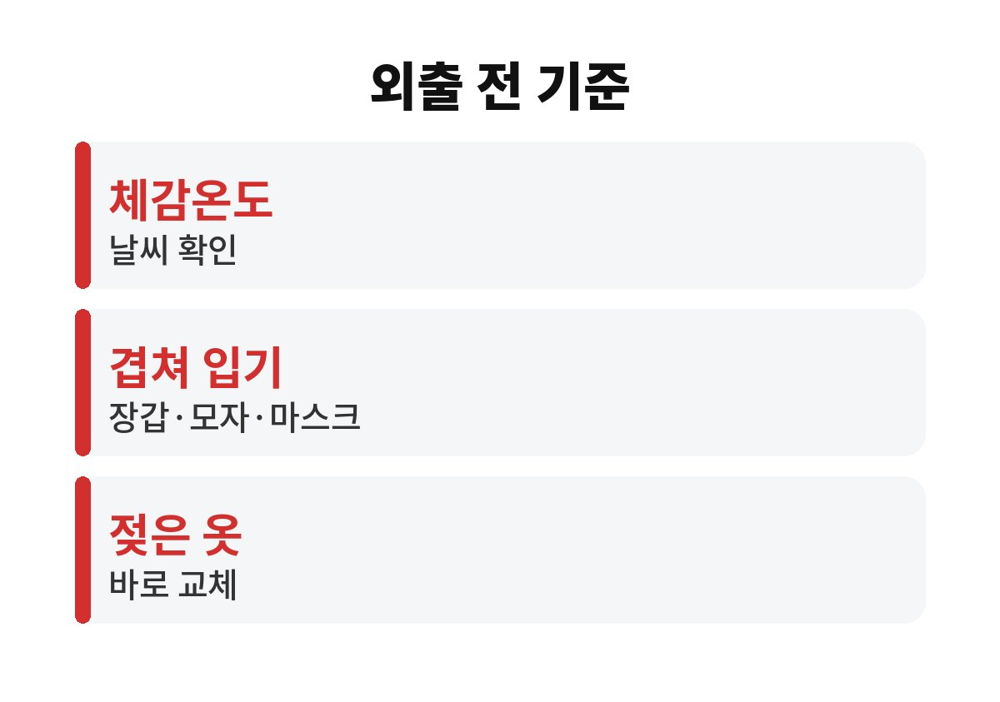
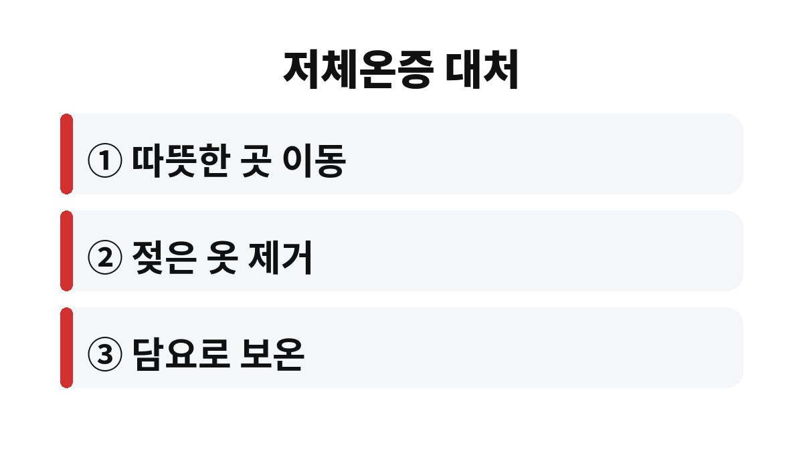

한랭질환 예방수칙의 출발점은 외출 전에 체감온도를 확인하고, 젖은 옷과 신발을 바로 갈아입는 것이다.
질병관리청은 2013년부터 매년 12월 1일부터 2월 28일까지 한랭질환 응급실감시체계를 운영하며 환자 신고를 받는다.
곧 그 기간이 시작되므로 질병관리청의 한파 대비 건강수칙을 상황별로 풀어 적었다.
한랭질환은 추위가 직접 원인이 되어 몸에 피해를 주는 질환이다.
대표적인 것이 몸 전체의 저체온증, 손발 같은 일부가 다치는 동상과 동창이다.
질병관리청 안내에 따르면 2025-2026절기에 신고된 환자는 106명이었고, 이 가운데 저체온증이 92.5%였다.
실외에서 생긴 경우가 79.2%였고, 사망 3건은 모두 고령층이었다.
감시체계는 응급실을 찾은 환자만 세기 때문에 실제 경험자는 이보다 많을 수 있다.
신고는 참여 응급의료기관에서 보건소와 시·도를 거쳐 질병관리청으로 모인다.
발생 현황은 매일 오후 4시 기준으로 질병관리청 누리집에 올라온다.
집 안이 아니라 길 위에서 생기는 병이라는 점이 눈에 띈다.
한랭질환 예방수칙이 실내 난방보다 외출 습관을 먼저 말하는 이유다.
질병관리청은 어르신과 어린이가 체온을 유지하는 기능이 약하다고 설명한다.
심뇌혈관질환, 당뇨병, 고혈압 같은 만성질환이 있는 사람도 위험이 높다.
최근 5년 동안 신고된 1,914건 가운데 60세 이상이 1,071건이었다.
고령층은 추위에 열을 지키거나 보충하는 능력이 일반 성인보다 낮다고 안내된다.
치매가 함께 있는 경우가 최근 5년 신고 중 234건, 12.2%였다.
추운 줄 모르고 오래 밖에 머무는 상황이 이런 분들에게 더 쉽게 생긴다.
술도 변수다.
전년도 감시자료에서 전체 환자의 21.3%가 음주 상태였다.
따뜻하게 느껴지는 취기가 오히려 추위를 알아차리는 시점을 늦춘다.
질병관리청의 한랭질환 예방수칙은 네 가지 상황으로 나뉜다.
공식 수칙은 추운 날 야외활동을 줄이라고 하지만 출퇴근이나 병원 방문은 줄이기 어렵다.
그럴 때는 겹쳐 입기와 젖은 옷 갈아입기가 현실적인 방법이다.
내가 보기에 가장 지키기 쉬운 것은 마른 양말 한 켤레다.
눈길을 걷다 신발이 젖은 채로 두면 체온이 빠르게 떨어진다.
| 상황 | 질병관리청 수칙 | 해 볼 일 |
|---|---|---|
| 외출 전 | 체감온도 확인, 야외활동 줄이기 | 날씨 앱에서 체감온도 보기 |
| 외출 시 | 내복이나 얇은 옷 겹쳐 입기, 장갑·목도리·모자·마스크, 젖은 옷과 신발 교체 | 여분 양말 챙기기 |
| 실내 | 적정온도 유지, 건조하지 않게 하기 | 온습도계 확인 |
| 생활 | 가벼운 실내운동, 수분 섭취, 고른 영양식 | 따뜻한 물 한 컵 |

빙판길과 경사지, 계단은 피하고 평지나 승강기를 이용하라는 것이 질병관리청 안내다.
장갑을 끼면 넘어질 때 손을 짚기도 수월하다.
아침에 장갑 없이 얼어붙은 계단을 내려오다 미끄러지는 장면이 가장 흔한 사고의 모습이다.
한파 속에서 몸이 심하게 떨리거나 말과 행동이 평소와 다른 사람을 보면 아래 순서로 움직인다.
질병관리청이 안내한 조치법이다.
술에 취해 있거나 고령인 사람이 길에 앉아 있으면 말을 걸어 보고 상태를 살핀다.
이 순서에는 119 신고가 들어 있지 않으므로 의식이 흐리면 순서보다 신고가 먼저다.

이번 겨울에 먼저 챙길 것은 부모님과 아이의 외출 전 체감온도 확인이다.
의식이 흐리거나 상태가 심하면 응급 상황이므로 지체하지 말고 119에 연락한다.
만성질환이 있거나 증상이 계속되면 전문의와 상담한다.
참고 자료: 질병관리청 보도자료 「낮에도 영하권, 연말연시 한랭질환 주의하세요」(2026년 11월 확인) · 질병관리청 보도자료 「큰 추위 대한(大寒), 고령층 한랭질환 주의하세요」(2026년 11월 확인)
※ 2026년 기준 공식 기준을 바탕으로 정리한 일반 건강 정보이며, 증상이 계속되거나 지병이 있다면 전문의와 상담하길 바란다.